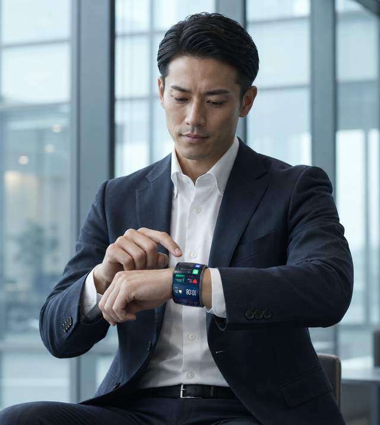
仕事
必要な情報は、手元に。
必要な情報は、手元に。
仕事がもっとスマートに。
会議の予定やメール、LINEの通知をまとめて確認。スマホを取り出す回数を減らせます。
必要な情報は、すべて手元に。
予定・メール・LINEが、スマホなしで見やすい。
通常価格¥50,000〜（税込）幅6cmは¥60,000
サイズ・価格を見る LINE・メールで最新情報を受け取る※画像・画面表示はイメージです。
PROBLEM
画面が小さく、表示できる情報も限られる
会議中や移動中、手が離せないときに
見たい情報ごとに画面を切り替える手間
SOLUTION
リストバンド全体がフレキシブルOLED。見たい情報を、見やすく並べて表示できます。
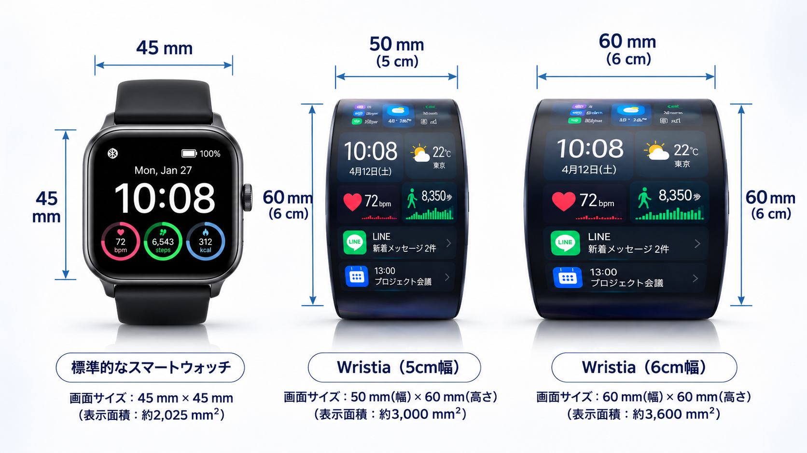
※イメージ映像です。
手首に沿ったリストタイプ。文字も数字も大きく表示できます。
時刻・天気・通知・健康情報を、見やすい配置にアレンジ。
通知の確認や通話、Googleウォレットでの支払いまで。
FEATURES
MODE
仕事・健康管理・ファッションなど、カスタマイズしたモードをすぐに呼び出せます。
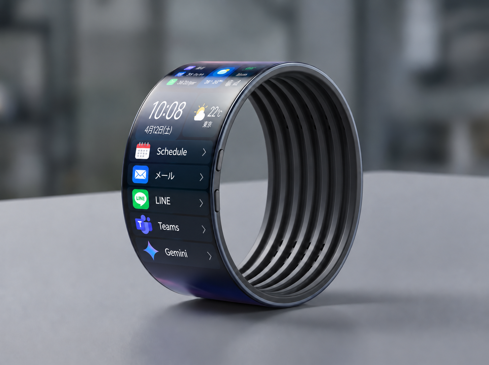
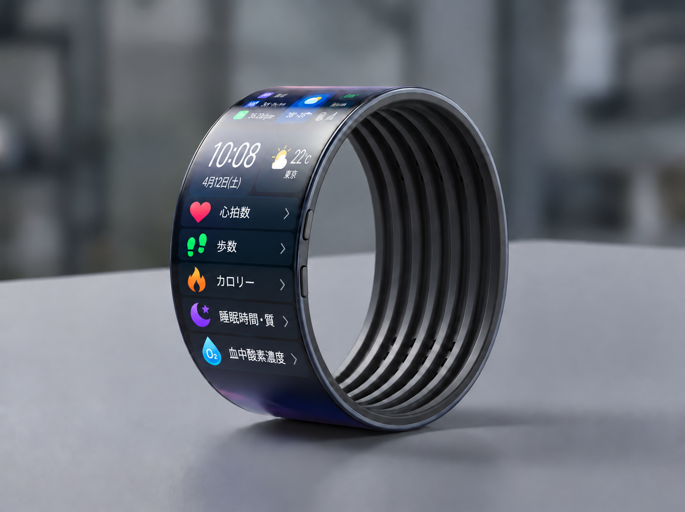
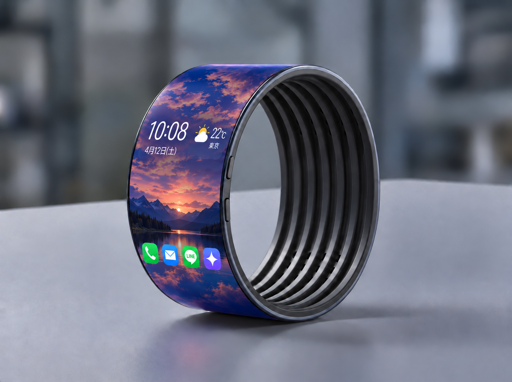
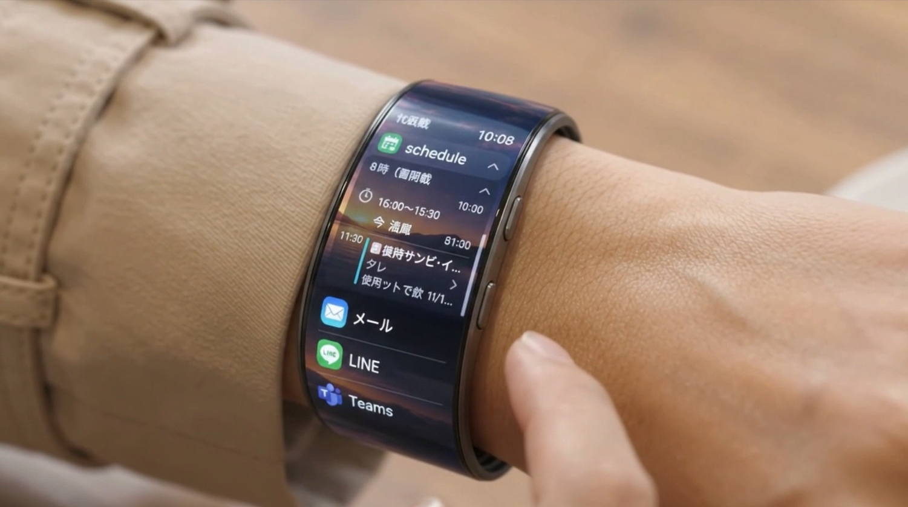
NOTIFICATION
メッセージやアプリの通知を大きく表示。スクロールして内容も確認できます。
※画像はイメージです。
Gemini AIを搭載。Googleアプリを手元で使えて、Googleウォレットでの支払いにも対応。
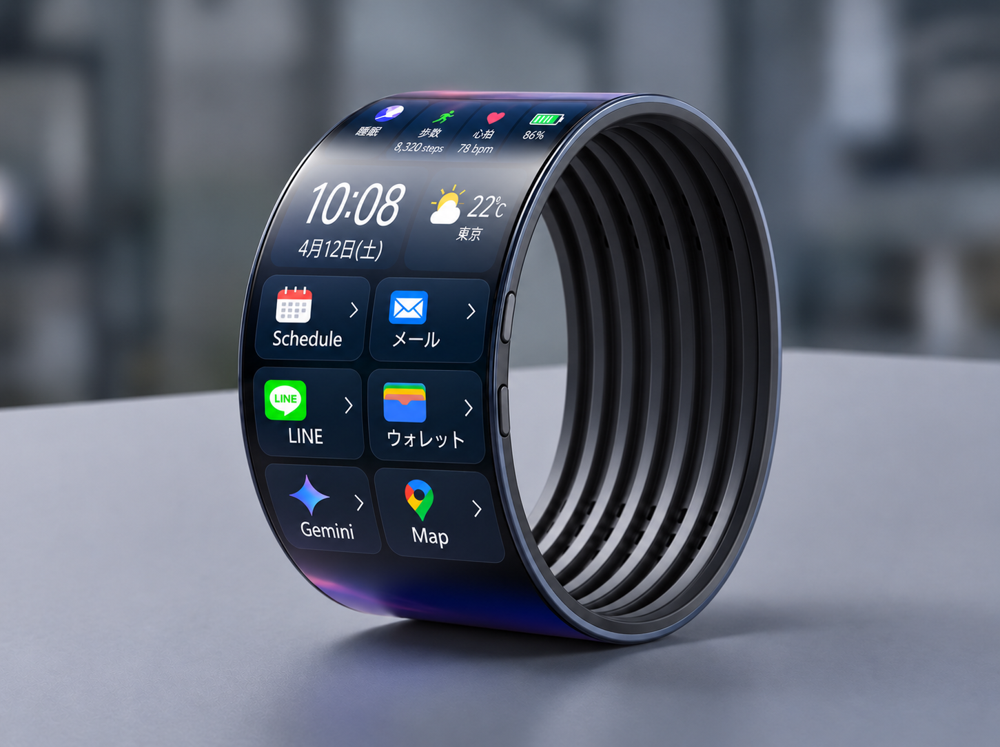
※画面はイメージです。
VENT
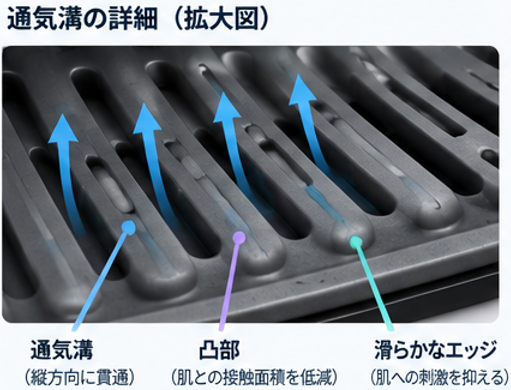
肌に触れる内側に、空気の通り道となる通気溝と、やわらかなシリコーン素材。肌との接触面積を減らし、汗や湿気がこもりにくい設計です。
※構造はイメージです。
BATTERY
40時間
常時表示する設定で最長のバッテリー駆動※
BATTERY
72時間
バッテリーセーバーモードで最長※
IP57
防塵・防水。汗や雨、運動中も安心
GPS内蔵
デュアル周波数GPSで位置を記録
マグネットで、かんたん装着
薄型で腕に沿うリング状のスタイリッシュなデザイン
※バッテリー持続時間は、画面の明るさ・表示内容・測定機能の使用状況により異なります。
SCENE

会議の予定やメール、LINEの通知をまとめて確認。スマホを取り出す回数を減らせます。
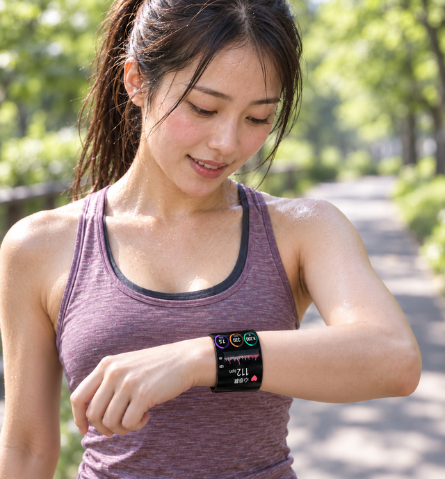
心拍数や歩数、運動時間を大きく表示。ウォーキングやランニングのお供に。
薄型で腕に沿うデザイン。カラーは4色、ファッションに合わせて選べます。
HEALTH
※測定値は日々の健康管理の目安です。※アイコンはイメージです。
大きな画面で
文字もくっきり
整理された表示で
ひと目で把握
薄型で腕に沿う
スタイリッシュ
LINEUP
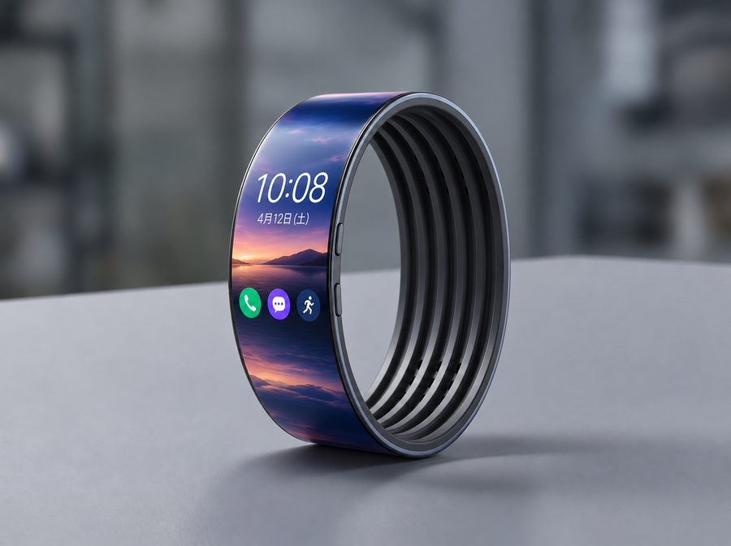
幅5cm通常価格 ¥50,000（税込）
通気溝の内側設計で、幅広でもこもりにくい
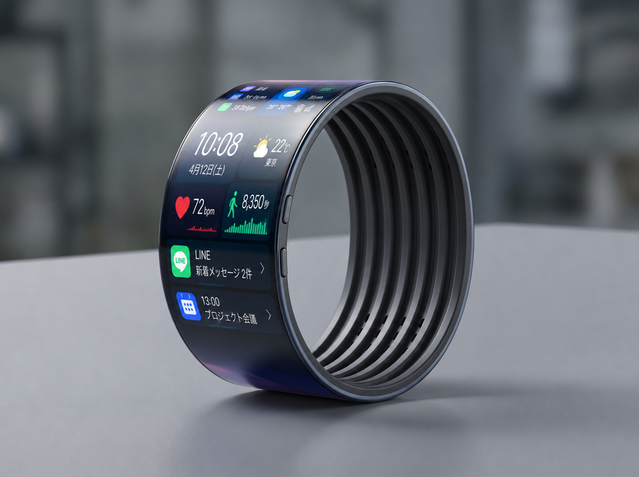
幅6cm通常価格 ¥60,000（税込）
通気溝の内側設計で、幅広でもこもりにくい
※画像はイメージです。表示内容は実際と異なる場合があります。
幅5cm・6cm 共通
手首周りの太い部分にメジャーを巻いて測ってください。165〜175mmの方はどちらも選べます。
| 素材 | 本体：軽量アルミニウム／バンド：ソフトシリコン |
|---|---|
| ディスプレイ | フレキシブルOLED |
| 通信方式 | Bluetooth 6.0、Wi-Fi（2.4GHz / 5GHz）、NFC、FeliCa（おサイフケータイ対応） |
| GPS | デュアル周波数GPS（GPS、Galileo、Glonass、Beidou、QZSS対応） |
| 対応デバイス | Android 12.0 以降を搭載したほぼすべてのスマートフォン |
| 電源 | 標準 455 mAh／常時表示で最長 40 時間、バッテリーセーバーモードで最長 72 時間 |
| 防塵・防水 | IP57 |
VOICE
会議の予定やメール、LINEの通知を一度に確認できるのが本当に便利です。スマホを取り出す回数が減って、仕事中のちょっとしたストレスがなくなりました。
40代 男性／会社員
最初は幅5cmだと不安がありましたが、内側の通気溝のおかげか、歩いているときも快適です。心拍数や運動時間も見やすくて助かっています。
30代 女性／ウォーキングが趣味
心拍数や歩数、皮膚温度などをまとめて確認できるので、毎日の健康チェックが習慣になりました。画面が大きくて数字も見やすいところが気に入っています。
50代 女性／健康管理を重視
手首に沿って画面がカーブしているデザインが最高です。表示内容も自由に変えられて、自分だけのデバイスを使っている感じがします。
30代 男性／ガジェット好き
※個人の感想であり、効果・使用感を保証するものではありません。
サイズ・価格を見るFAQ
新着情報やキャンペーンを、LINEまたはメールでお届けします。
または